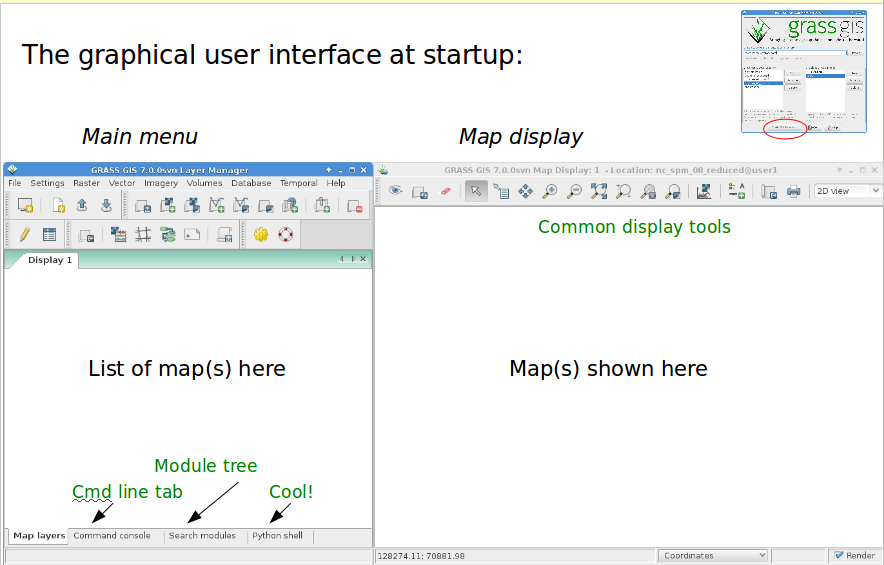
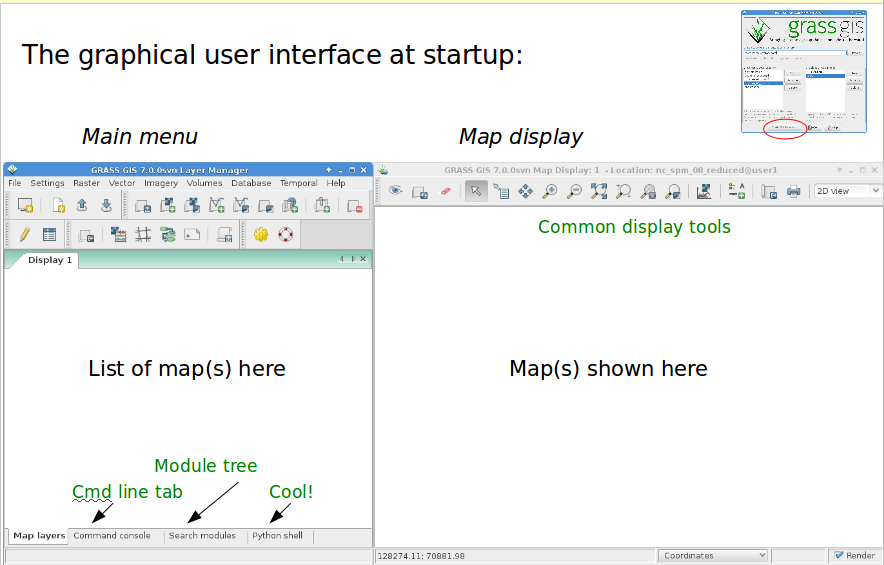
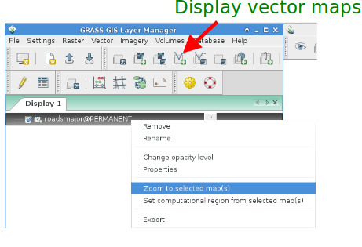
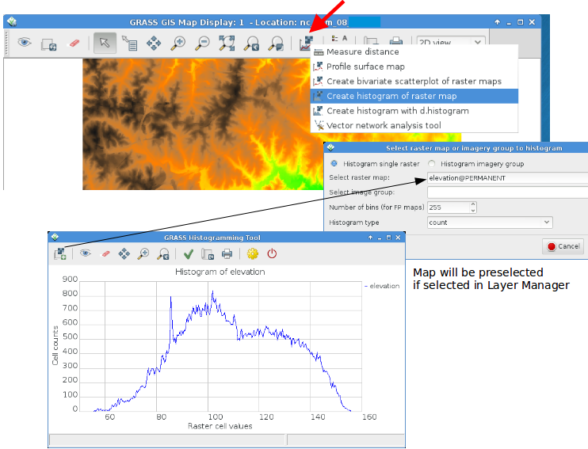
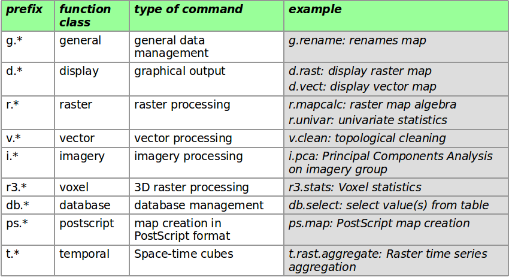
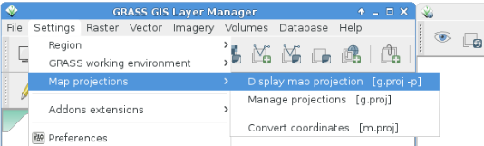
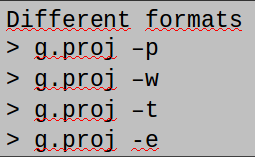
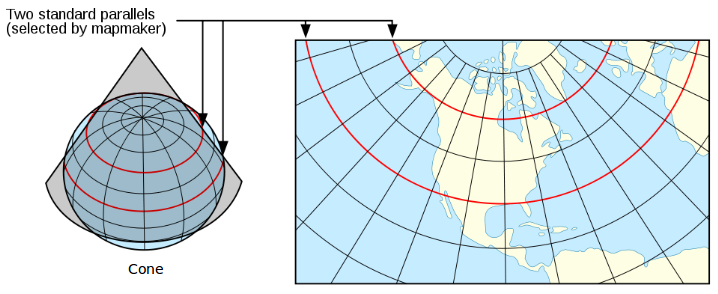
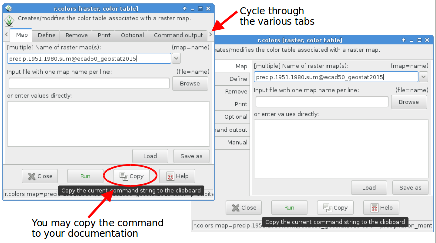

GRASS GIS 7 intro

Session Objectives
- Database structure of GRASS GIS
- About the course data set
- First steps in using GRASS GIS 7
- the graphical user interface (GUI)
- displaying raster and vector maps
- querying maps
- adding map elements
- bmap swiping with two different Landsat coverages
- bivariate scatterplots
- GRASS GIS command structure
- command line or GUI?
- Creating a perspective view
- the graphical user interface (GUI)
GRASS GIS Database concept:

graphical view:

… effectively a tree of subdirectories.
GRASS GIS is a multi-user system when storing “grassdata” on a network drive. Users can share “locations” and manage therein own “mapsets“ for the data.
GRASS GIS will do the file management for you!
Standard GIS formats versus GRASS 7 Database
 |
 |
|---|---|
| Data in standard GIS formats. | Data in GRASS GIS formats. |
| Store in directory: | Store in directory: |
| /home/user/gisdata/ | /home/user/grassdata/ |
| or a shared network directory | or a shared network directory |
Exercise - GRASS startup and first steps
 

Displaying raster and vector maps
A) Using the menu

B) Using the icons

Display the “roadsmajor” vector map
- Load the “roadsmajor” vector map into the canvas, zoom to map if needed:


Show vector map attributes
Open the attribute table of the “roadsmajor” vector map by
- … either right-mouse clicking in layer tree on map name
- … or using the related “Show Attribute table” icon

SQL queries of attributes
Select the single lane roads in the “roadsmajor” vector map
- Use “Simple” SQL query
- The selected vectors will be highlighted in the map display

Adding map elements

Modify element settings and position
Using the Wake county “elevation” and “roadsmajor” maps:

Use pointer to
- move map elements
- edit element settings with a click
Map histogram tool

Adding a Lat-Long grid to the map
Using the NC state “elev_state_500m” map:
 Select a grid size in grid unts (here: LL – 1 deg) → Draw grid as LatLong WGS84 grid
Select a grid size in grid unts (here: LL – 1 deg) → Draw grid as LatLong WGS84 grid

Map swiping for multitemporal maps
Load the LANDSAT 5 (1987) and 7 (2002) RGB composites of Wake county:

Convenient map selector
Load the LANDSAT channels red and green using the convenient map selector

Bivariate Scatterplots
Load the LANDSAT 7 2002 channels 1 and 3 of Wake county.

Overview: GRASS GIS command structure

Ninja Trick, type the desired prefix (e.g. v.) and then
GRASS startup and first steps
Know where you are...
get projection information for the North Carolina Location
command: g.proj
wxGUI: Settings → Map projections → Manage projections
 
get projection information for the North Carolina sample data set:
| type | name | description |
|---|---|---|
| name : | Lambert Conformal Conic | Projection name |
| proj : | lcc | projection |
| datum : | nad83 | geodetic datum |
| a : | 6378137.0 | ellipsoid GR80 |
| es : | 0.006694380022900787 | ellipsoid GR80 |
| lat_1 : | 36.16666666666666 | standard parallels |
| lat_2 : | 34.33333333333334 | standard parallels |
| lat_0 : | 33.75 | reference latitude |
| lon_0 : | -79 | reference longitude |
| x_0 : | 609601.22 | } lon and lat shifts... |
| y_0 : | 0 | ...(false easting/northing) |
| units : | meters | unit |
GRASS Database concept - Projection
Projection of the North Carolina Location:
- NAD83(HARN) / North Carolina – EPSG code: 3358 
+proj=lcc
+lat_1=36.16666666666666 +lat_2=34.33333333333334
+lat_0=33.75 +lon_0=-79
+x_0=609601.22 +y_0=0
+ellps=GRS80 +units=m +no_defs
Graphical user interface versus Command line
- GRASS GIS offers a graphical user interface
On command line, there is (text) help:
r.univar --help
- There are flags (e.g. -g ) and parameters (e.g. map= )
From command line, you can open the module's GUI (just call the command without parameters)
r.univar --ui… or generate a Python script template
r.univar --script
STYLE: Menu: Settings → GUI Settings → Appearance → Module dialog style: Basic top/left  The graphical user interface effectively generates the respective command for the command line (and also writes to the shell “history”)
Command line at its best
Advantages of the command line

Run “history” to see all your previous commands, “forever”
History is stored individually per MAPSET (note that the history of each map is stored within the map's metadata, for this use r|r3|v.info)
Search in history with CTRL-R
Save it to a file:
history > my_protocol.sh

- Note for Windows users: no history command but
“Command console” tab → “Log file” Polish protocol file, use “# comment” to annotate it
Rerun such a protocol file in a later GRASS GIS session with
sh my_protocol.sh
Note: a simplified command line is included in the graphical user interface, tab “Command console”.
It offers a “Command prompt protocol” button.
- These script will work for decades...
Exercise Perspective view
Load the Wake county “elevation” map (this tool requires OpenGL support):